图片卷积¶
图像滤波是尽量保留图像细节特征的条件下对目标图像的噪声进行抑制，是图像预处理中不可缺少的操作，其处理效果的好坏将直接影响到后续图像处理和分析的有效性和可靠性。
线性滤波是图像处理最基本的方法，它允许我们对图像进行处理，产生很多不同的效果。首先，我们需要一个二维的滤波器矩阵(卷积核)和一个要处理的二维图像。然后，对于图像的每一个像素点，计算它的邻域像素和滤波器矩阵的对应元素的乘积，然后加起来，作为该像素位置的值。这样就完成了滤波过程。
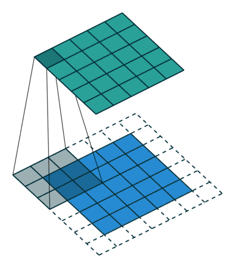
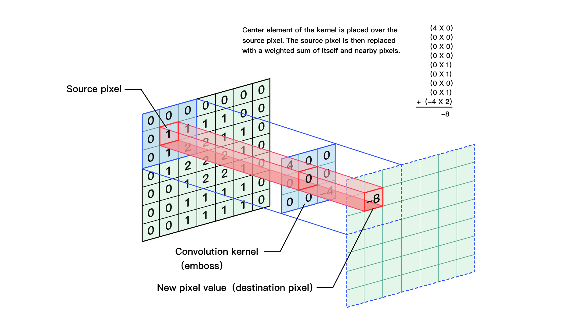
对图像和滤波矩阵进行逐个元素相乘再求和的操作就相当于将一个二维的函数移动到另一个二维函数的所有位置，这个操作就叫卷积
卷积需要4个嵌套循环，所以它并不快，除非我们使用很小的卷积核。这里一般使用3x3或者5x5。而且，对于滤波器/卷积核，也有一定的规则要求：
- 滤波器的大小应该是奇数，这样它才有一个中心，例如3x3，5x5或者7x7。有中心了，也有了半径的称呼，例如5x5大小的核的半径就是2
- 滤波器矩阵所有的元素之和应该要等于1，这是为了保证滤波前后图像的亮度保持不变。当然了，这不是硬性要求了。
- 如果滤波器矩阵所有元素之和大于1，那么滤波后的图像就会比原图像更亮，反之，如果小于1，那么得到的图像就会变暗。如果和为0，图像不会变黑，但也会非常暗。
- 对于滤波后的结构，可能会出现负数或者大于255的数值。对这种情况，我们将他们直接截断到0和255之间即可。对于负数，也可以取绝对值。
均值滤波¶
将卷积核内的所有灰度值加起来,然后计算出平均值,用这个平均值填充卷积核正中间的值,这样做可以降低图像的噪声,同时也会导致图像变得模糊
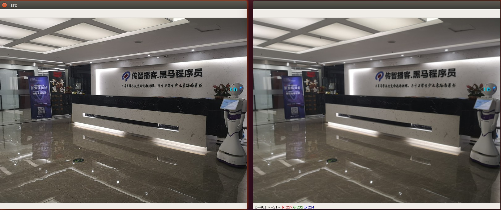
示例代码:
import cv2 as cv
img = cv.imread("./assets/itheima.jpg", cv.IMREAD_COLOR)
cv.imshow("src",img)
dst = cv.blur(img, (3,3))
cv.imshow("dst",dst)
cv.waitKey(0)
cv.destroyAllWindows()
高斯模糊¶
采用均值滤波降噪会导致图像模糊的非常厉害,有没有一种方式既能保留像素点真实值又能降低图片噪声呢?那就是加权平均的方式. 离中心点越近权值越高,越远权值越低.
但是权重的大小设置非常麻烦,那么有没有一种方式能够自动生成呢? 这个就是需要用到高斯函数
高斯函数呈现出的特征就是中间高，两边低的钟形
高斯模糊通常被用来减少图像噪声以及降低细节层次。
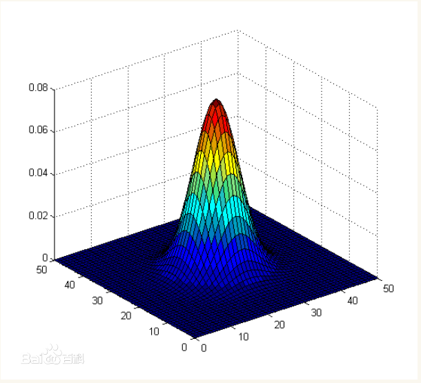
示例代码:
import cv2 as cv
# 回调函数
def updateSigma(val):
# 高斯模糊 参数1:图像 参数2:卷积核大小, 参数3:标准差越大，去除高斯噪声能力越强，图像越模糊
gaussian_blur = cv.GaussianBlur(img, (5,5), val)
cv.imshow("gaussian",gaussian_blur)
img = cv.imread("assets/itheima.jpg", cv.IMREAD_GRAYSCALE)
cv.imshow("src",img)
# 创建一个窗口
cv.namedWindow("gaussian",cv.WINDOW_AUTOSIZE)
# 创建一个窗口进度条: 参数1:名称 参数2:窗口名称 参数3: 起始值 参数4: 最大值, 参数5:回调函数
cv.createTrackbar("sigma","gaussian",0,255,updateSigma)
updateSigma(0)
cv.waitKey(0)
cv.destroyAllWindows()
中值滤波¶
对邻近的像素点进行灰度排序,然后取中间值,它能有效去除图像中的椒盐噪声
操作原理: 卷积域内的像素值从小到大排序 取中间值作为卷积输出
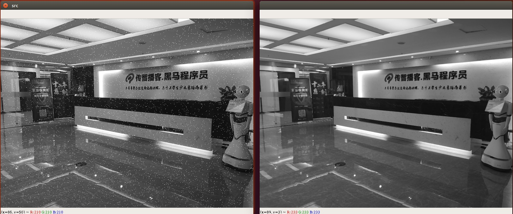
示例代码
import cv2 as cv
img = cv.imread("./assets/itheima_salt.jpg", cv.IMREAD_COLOR)
cv.imshow("src",img)
dst = cv.medianBlur(img, 3)
cv.imshow("dst",dst)
cv.waitKey(0)
cv.destroyAllWindows()
Sobel算子¶
Sobel算子是像素图像边缘检测中最重要的算子之一，在机器学习、数字媒体、计算机视觉等信息科技领域起着举足轻重的作用。在技术上，它是一个离散的一阶差分算子，用来计算图像亮度函数的一阶梯度之近似值。在图像的任何一点使用此算子，将会产生该点对应的梯度矢量
- 水平梯度
- 垂直梯度
- 合成
为了提高计算机效率我们通常会使用: G = |Gx|+|Gy|
这里我们使用sobel卷积算子来查看脑干图像
图片顺序: 原图---> x 方向sobel ----> y 方向sobel ----> xy合在一起
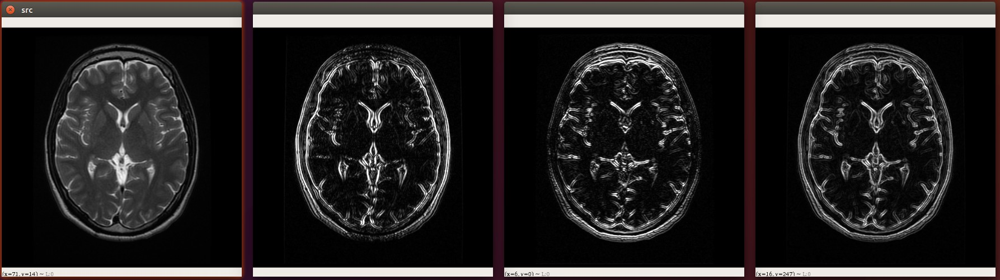
示例代码
import cv2 as cv
img = cv.imread("./assets/brain.jpg",cv.IMREAD_GRAYSCALE)
cv.imshow("src",img)
# sobel算子 参数1:图像, 参数2:图像的深度 -1表示和原图相同, 参数3: x方向求导的阶数 参数4: y方向求导的阶数
x_sobel = cv.Sobel(img, cv.CV_32F, 1, 0)
# 将图像转成8位int
x_sobel = cv.convertScaleAbs(x_sobel)
cv.imshow("x sobel",x_sobel)
# sobel算子
y_sobel = cv.Sobel(img, cv.CV_16S, 0, 1)
# 将图像转成8位int
y_sobel = cv.convertScaleAbs(y_sobel)
cv.imshow("y_sobel",y_sobel)
# 将x，y方向的内容叠加起来
x_y_sobel = cv.addWeighted(x_sobel, 0.5, y_sobel, 0.5,0)
cv.imshow("x,y sobel",x_y_sobel)
cv.waitKey(0)
cv.destroyAllWindows()
由于使用Sobel算子计算的时候有一些偏差, 所以opencv提供了sobel的升级版Scharr函数,计算比sobel更加精细.
下面是使用Scharr计算出来的边缘图像
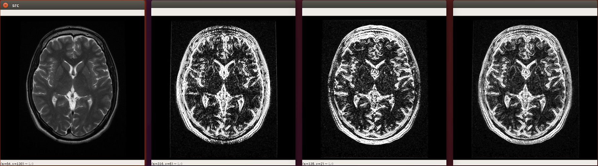
示例代码
import cv2 as cv
img = cv.imread("./assets/brain.jpg",cv.IMREAD_GRAYSCALE)
cv.imshow("src",img)
# sobel算子
x_scharr = cv.Scharr(img, cv.CV_32F, 1, 0)
# 将图像转成8位int
x_scharr = cv.convertScaleAbs(x_scharr)
cv.imshow("x scharr",x_scharr)
# # sobel算子
y_scharr = cv.Scharr(img, cv.CV_16S, 0, 1)
# 将图像转成8位int
y_scharr = cv.convertScaleAbs(y_scharr)
cv.imshow("y scharr",y_scharr)
# 将x，y方向的内容叠加起来
xy_scharr = cv.addWeighted(x_scharr, 0.5, y_scharr, 0.5,0)
cv.imshow("x,y scharr",xy_scharr)
cv.waitKey(0)
cv.destroyAllWindows()
拉普拉斯算子¶
通过拉普拉斯变换后增强了图像中灰度突变处的对比度，使图像中小的细节部分得到增强,使图像的细节比原始图像更加清晰。
- 普通
- 增强型
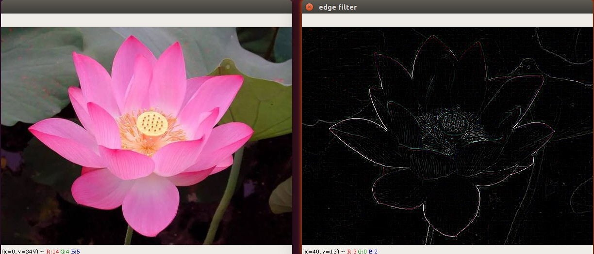
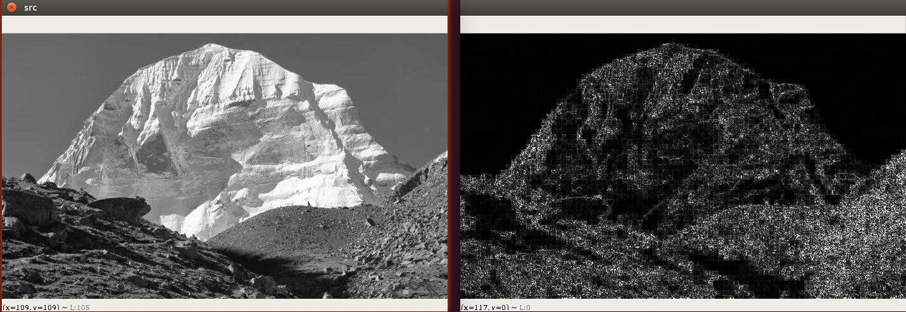
import cv2 as cv
img = cv.imread("./assets/grbq.jpg",cv.IMREAD_GRAYSCALE)
cv.imshow("src",img)
# 使用拉普拉斯算子
dst = cv.Laplacian(img,cv.CV_32F)
# 取绝对值，将数据转到uint8类型
dst = cv.convertScaleAbs(dst)
cv.imshow("dst",dst)
cv.waitKey(0)
cv.destroyAllWindows();
canny边缘检测算法¶
Canny算法由John F.Canny于1986年开发，是很常用的边缘检测算法。
它是一种多阶段算法，内部过程共4个阶段：
- 噪声抑制（通过Gaussianblur高斯模糊降噪）:使用5x5高斯滤波器去除图像中的噪声
- 查找边缘的强度及方向（通过Sobel滤波器）
- 应用非最大信号抑制（Non-maximum Suppression）: 完成图像的全扫描以去除可能不构成边缘的任何不需要的像素
- 高低阈值分离出二值图像（Hysteresis Thresholding）
- 高低阈值比例为T2:T1 = 3:1 / 2:1
- T2为高阈值，T1为低阈值
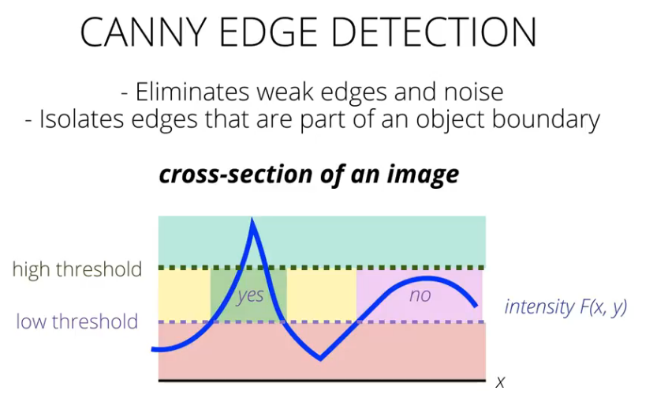
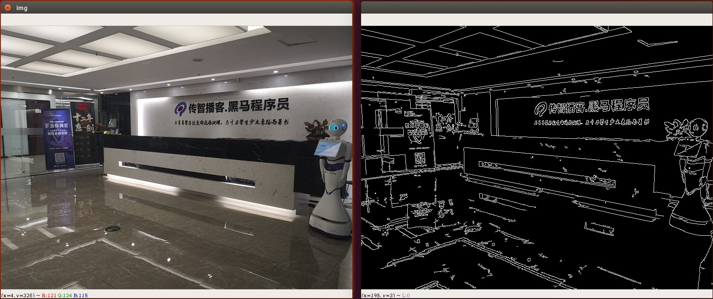
示例代码
import cv2 as cv
import numpy as np
import random
# 将图片数据读取进来
img = cv.imread("img/itheima.jpg",cv.IMREAD_COLOR)
cv.imshow("img",img)
# 1. 将图片转成灰度图片
grayImg = cv.cvtColor(img, cv.COLOR_BGR2GRAY)
# 2. canny算法
dstImg = cv.Canny(grayImg,50,180)
# 显示效果图
cv.imshow('dstimg',dstImg)
cv.waitKey(0)
双边滤波¶
双边滤波其综合了高斯滤波器和α-截尾均值滤波器的特点，同时考虑了空间域与值域的差别，而Gaussian Filter和α均值滤波分别只考虑了空间域和值域差别。高斯滤波器只考虑像素间的欧式距离，其使用的模板系数随着和窗口中心的距离增大而减小；α-截尾均值滤波器则只考虑了像素灰度值之间的差值，去掉α%的最小值和最大值后再计算均值。
在opencv中,双边滤波的api已经提供好啦!
cv.bilateralFilter(输入图像, d, sigmaColor, sigmaSpace)
src: 输入图像
d: 表示在过滤过程中每个像素邻域的直径范围。如果这个值是非正数，则函数会从sigmaSpace计算该值。
sigmaColor: 颜色空间过滤器的sigma值，这个参数的值越大，表明该像素邻域内有越宽广的颜色会被混合到一起，产生较大的半相等颜色区域。
sigmaSpace: 坐标空间中滤波器的sigma值，如果该值较大，则意味着越远的像素将相互影响，从而使更大的区域中足够相似的颜色获取相同的颜色.
双边滤波器可以很好的保存图像边缘细节而滤除掉低频分量的噪音，但是双边滤波器的效率不是太高，花费的时间相较于其他滤波器而言也比较长。
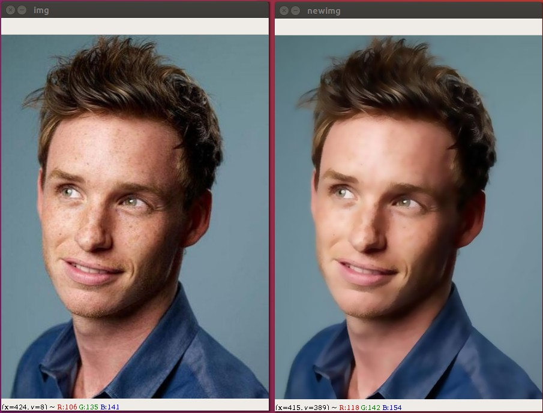
import cv2 as cv
# 将图片数据读取进来
img = cv.imread("img/timg.jpg",cv.IMREAD_COLOR)
cv.imshow('img',img)
# 双边滤波
dstImg = cv.bilateralFilter(img, 10, 50, 50)
# 显示改变之后的图像
cv.imshow('newimg',dstImg)
cv.waitKey(0)
补充知识点¶
锐化滤波¶
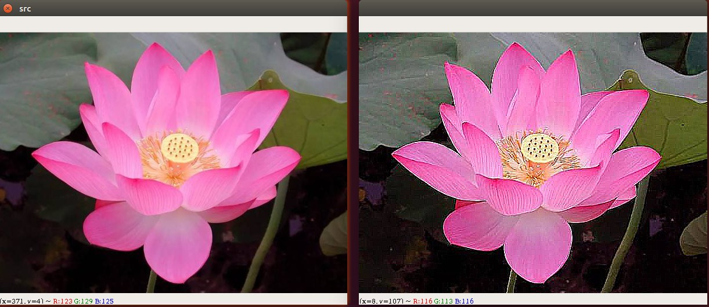
图像的锐化和边缘检测很像，首先找到边缘，然后把边缘加到原来的图像上面，这样就强化了图像的边缘，使图像看起来更加锐利了
实际上是计算当前点和周围点的差别，然后将这个差别加到原来的位置上。另外，中间点的权值要比所有的权值和大于1，意味着这个像素要保持原来的值。
我们还可以按照公式来创建锐化滤波核:
示例代码
import cv2 as cv
import numpy as np
img = cv.imread("./assets/hehua.jpg",cv.IMREAD_COLOR)
cv.imshow("src",img)
kernel = np.array([
[-1,-1,-1],
[-1,9,-1],
[-1,-1,-1]])
dst = cv.filter2D(img,-1,kernel)
cv.imshow("sharpness filter",dst)
cv.waitKey(0)
cv.destroyAllWindows()